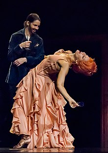

La expresión corporal o lenguaje corporal es una de las formas básicas para la comunicación no verbal. A veces los gestos o tipos de vestimenta movimientos de las manos o los brazos pueden ser una guía de sus pensamientos o emociones subconscientes. Las palabras se usan para establecer y mantener relaciones personales, mientras que las señales no verbales se utilizan para comunicar información acerca de los sucesos externos es para expresarse de una manera creativa, se refiere a la expresión con las manos que realizan las personas.

Arte
Representación teatral donde se muestra el uso de lenguaje corporal exagerado.
Como expresión artística se basa en la forma en que se interpretan emociones por medio de los movimientos: inconsciente y consciente. Se caracteriza por la disciplina que lleva a expresar emociones. El propósito principal es sentir libertad en la ejecución de cada movimiento artístico basado en los sentimientos que quieren expresar. Por ejemplo, si se quiere hacer una ejecución de éstas, se utiliza la creatividad para inventar formas y movimientos de lo que se está actuando, además de que tienen que sentirse en completa libertad. La expresión corporal es una actividad que normalmente desempeñan personajes como artistas, bailarines, mimos, etc. Esta actividad consiste en utilizar el cuerpo para representar ideas, sentimientos y sensaciones.
En la representación teatral se podría prescindir de todos los sistemas de signos auditivos y de casi todos los visuales, menos de la acción; quien se dedica a la actuación siempre es la persona encargada de llevarla a cabo, por lo que la expresión corporal es esencial, y fundamental en la representación teatral, es decir, durante la obra de teatro.
Coreografía y elementos de la danza